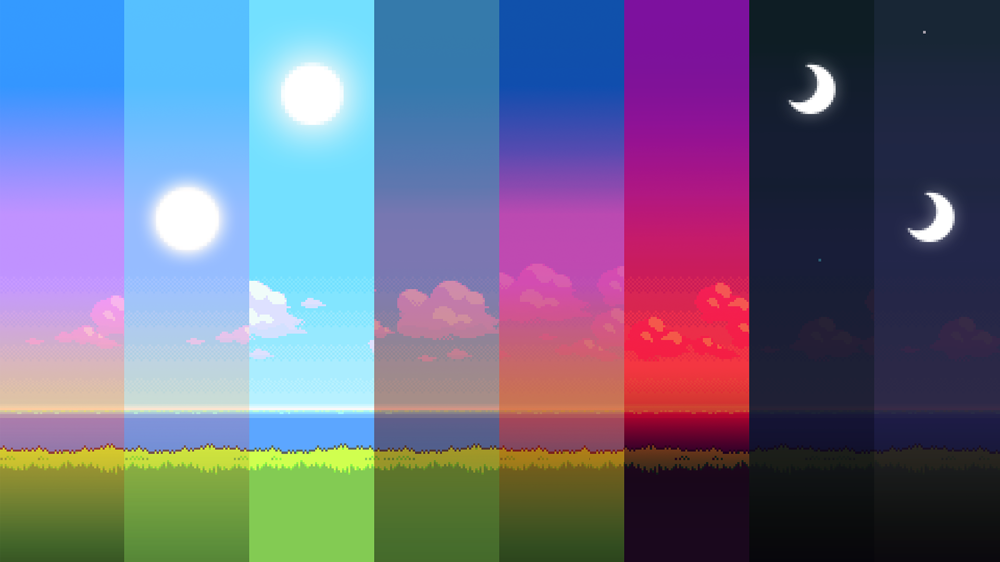

"The first draft of anything is shit." -Ernest Hemingway
As this quote may suggest, this is the first full stack web application I have deployed. Programmed in Python (Django), stored in PostgreSQL, styled in Bootstrap, and deployed on Heroku, this website currently represents the culmination of my extracurricular efforts to teach myself web development. As such, it will more than likely be added to and refactored over time as my skills and understanding improve.
The content of the website is maintained mostly for my personal use. I quite enjoyed the technical or creative writing I was assigned throughout college, and as such the blog section may be a nice way to research and document some cool stuff I decide to write about from time to time. The recipe section, while not quite original, is simply for storing and referencing my personal creations, and being able to send them to family and friends when they ask. Lastly, the best way to learn something is to teach it, likewise the programming section may include programming subjects I have found enough interest or value in to exercise my creative writing ability on technical topics I am attempting to teach myself.
-
FrontEnd with Vue
This might be a bit overkill for what I am going for with this place, but due to Vue's adaptability and progressive enhancement, it will be a good tool to make use of, and good practice for future more involved Javascript projects -
Style with Tailwind
I have tried my hardest to make this current iteration look distinct from your average bootstrap app, but Tailwind seems to be the most popular solution to dealing with CSS, especially while this site isn't broken down into components. -
Backend with Go
Django as a "batteries included" framework comes pre-packaged with a lot of web application components and as such spoils me in terms of learning the ins-and-outs of the back end of a web app. As I develop my skills with GoLang over the course of this semester I hope to integrate some of it's lighter backend frameworks to build an application for TOM, and hopefully gain more understanding of these applications.
Current Tacos on Mars goals:
The emerald wallpaper
The banners used throughout Tacos on Mars can be found above. Taken from the opening of Pokemon Emerald and alternated for the times of day.